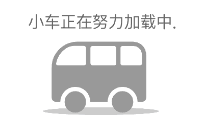

返回
{{busName}}
{{bus_station.start.name}}--{{bus_station.end.name}}
首 {{bus_station.firstBus}} 末 {{bus_station.lastBus}} 票价 {{bus_station.total}}元
{{bus_station.start.name}}
{{item.up_route.name}}
{{item.down_route.name}}
{{bus_station.end.name}}
